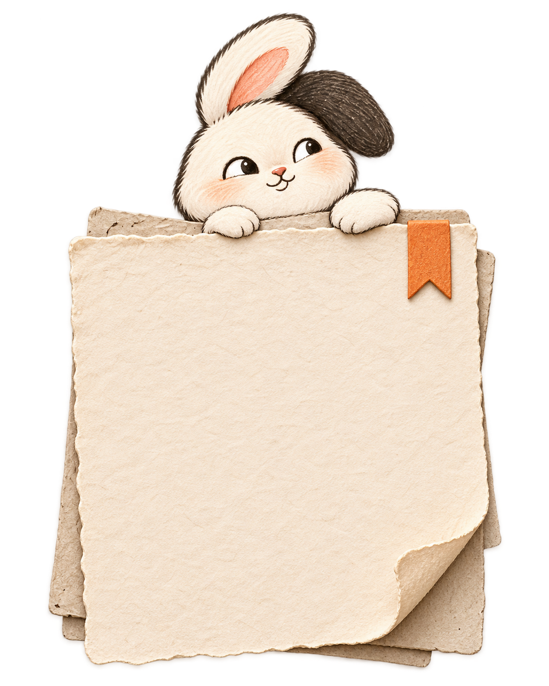
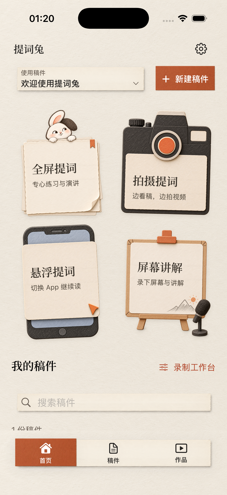

YOUR POCKET RECORDING DESK · iPhone / iPad
Your words.
At your pace.
From the first rehearsal to the next recording. Keep your script in sight, take a breath, and let CueBunny help you find your rhythm.

One breath.
One good take.A LITTLE HELP, EVERY TAKE
FOUR WAYS TO BEGIN
A place for every way you speak.
Full-screen Teleprompter
Rehearse or present with adjustable text size, speed and mirroring. Pause whenever you need a moment.
Camera Teleprompter
Read as you record. Capture a complete script or choose your favorite take for each sentence.
Floating Teleprompter
Keep your script on screen with system Picture in Picture and constant-speed scrolling.
Screen Commentary
Explain a PDF, an image or your screen as you record. Capture depends on system and app restrictions.

FROM SCRIPT TO RECORDING
Less memorizing.
A little more breathing room.
Prepare your words
Write a script or import existing text. You do not need to memorize it all at once.
Find your rhythm
Choose a mode and adjust text size and speed. Local voice follow is also available on supported devices and languages.
Keep the take you like
Review takes, work with audio and captions, then export the result to a destination you choose.
Your work.
On your device.
Scripts, recordings and supported speech recognition are processed locally. No developer upload server or advertising trackers. A language model may need an initial download. Keep copies of important work: the app library is excluded from device and iCloud backup.
Read about privacy and storage